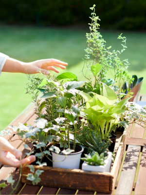
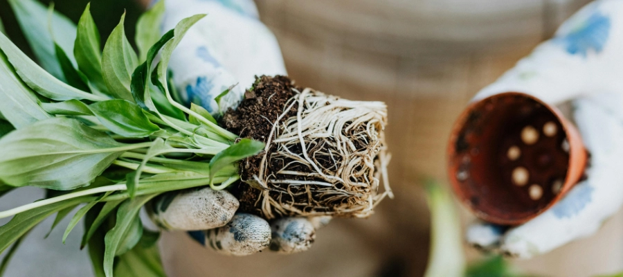
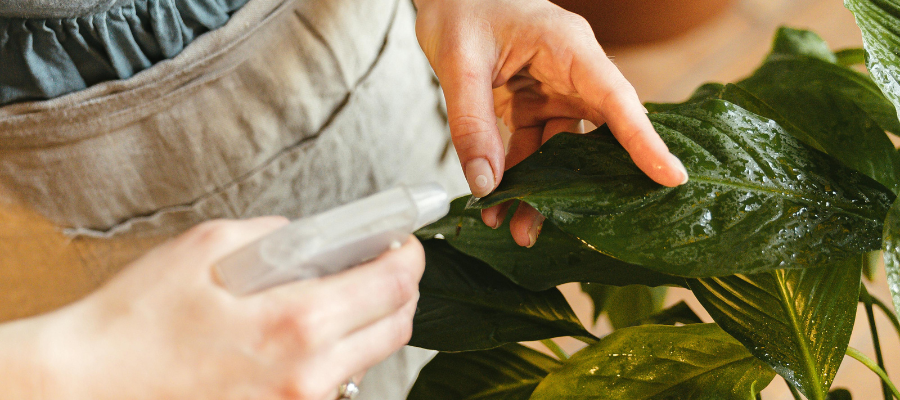
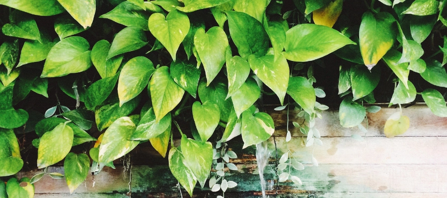
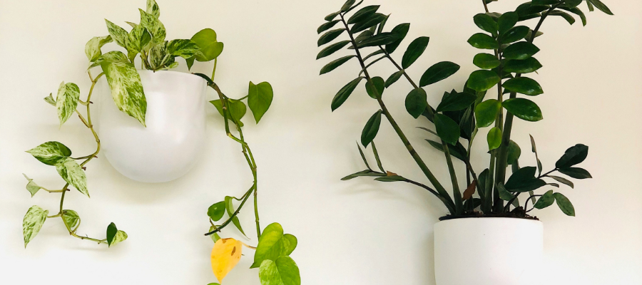

How to Prepare Your Houseplants for Outdoor Summer
23 February 2026
When the days start to get warmer and the light finally feels bright again, it’s so tempting to move every plant straight onto the balcony. After months of gentle indoor light, most houseplants really enjoy a little time outside.
If you’re wondering which ones handle the move best, take a peek at our list of plants that thrive outdoors in summer — these are the easiest to start with.
Even so, plants that spent winter indoors need a little prep before they can handle sun, wind, and outdoor temperature changes. Without a gradual transition, even hardy houseplants can get sunburn spots or drop a few leaves from the shock.
The good news? A slow shift into brighter light, a quick check for health, and a touch of patience are usually all it takes — and once they adjust, many come back fuller, stronger, and happier than they were all winter long.
Why Moving Plants Outdoors Helps Them Grow
Indoor conditions, especially through winter, tend to be dim, dry, and still. Heating systems lower humidity, windows filter light, and air circulation is minimal. Even well-cared-for houseplants often grow slowly, stretch toward light, or become slightly leggy during these months.
Spending summer outdoors can change that dramatically. Most houseplants benefit from:
- brighter natural light, which supports stronger photosynthesis and fuller leaf growth
- fresh air circulation, helping reduce pests and fungal issues that build up indoors
- natural humidity, especially after rain or in the morning air, which many tropical plants love
- more stable day-night rhythms, encouraging sturdier stems and healthier root systems
With these conditions, plants often shift from survival mode to active growth.
Many plants return indoors in fall noticeably fuller, greener, and more resilient than they were in spring. New leaves tend to be thicker, stems stronger, and overall growth more balanced.

Step 1: Check Plants’ Health First
Before moving anything outside, take a few minutes to inspect each plant closely. A quick check now can prevent bigger problems once your plants are exposed to sun, wind, and outdoor pests. Look for:
- Pests under leaves or along stems.
Even a small indoor infestation can spread quickly outdoors, where warmer temperatures help insects reproduce faster. Catching them early prevents bigger outbreaks later. - Dry or compacted soil.
Indoor soil often becomes dense over winter, which limits airflow around the roots and reduces water absorption. Loosening the top layer or refreshing it helps roots adjust to more active summer growth. - Weak stems or damaged leaves.
Plants that stretched in low winter light may not yet be strong enough for wind or brighter sun. Removing damaged growth lets the plant focus its energy on healthier new leaves. - Roots pushing out of the pot.
If roots are circling or escaping drainage holes, the plant may dry out very quickly outdoors. Repot or fresh soil top-up can help stabilize moisture levels.
Outdoor conditions are simply more intense than indoor ones. Stronger light increases water use, wind stresses stems, and temperature shifts force plants to adapt faster. A plant already struggling indoors will usually struggle even more once outside and it’s better to keep it inside rather than move it outdoors.
Weak or stressed plants are less able to handle the harsher conditions outside — bright sun, wind, temperature swings, and faster drying soil can make them drop leaves or worsen their condition. Focus first on strengthening the plant indoors: check for pests, trim damaged leaves, and give it the right light and water. Once it’s healthy and resilient, then you can begin a gradual outdoor transition.

Step 2: Clean Leaves Before the Transition
Indoor dust can actually block significant amounts of light from reaching your plant’s leaves — studies show that even a thin layer of dust can reduce photosynthesis efficiency by 10–15%. Leaves are how plants absorb light to make energy, so dust buildup slows their ability to produce food and adapt to brighter outdoor conditions.
A quick rinse in the shower or a gentle wipe with a damp cloth helps remove dust, improving light absorption and allowing the plant to breathe properly. Clean leaves can regulate water and gas exchange more efficiently, which is essential when plants are exposed to stronger sunlight, wind, or changing humidity outside.
After cleaning, it’s important to let plants dry fully before placing them outdoors. Wet leaves in direct sun can act like tiny magnifying glasses, potentially causing sunburn, and excess moisture can also encourage fungal growth if leaves stay damp.
Step 3: Harden Plants Off Slowly
The biggest mistake many plant lovers make is moving houseplants outside all at once. Even plants that look healthy indoors are accustomed to low light, minimal wind, and stable temperatures. Suddenly exposing them to full sun or outdoor conditions can cause leaf burn, wilting, or shock — the plant’s way of signaling stress.
A gentle, gradual approach, often called “hardening off,” helps plants adapt naturally. Start by placing them in bright shade or a sheltered spot for a few hours a day, then slowly increase exposure to sunlight over one to three weeks. This process allows the plant’s chloroplasts — the leaf structures responsible for photosynthesis — to adjust to higher light intensity without damage. It also strengthens stems and encourages the plant to produce tougher, more resilient leaves.
Practical routine example:
- Week 1: 2 – 3 hours outdoors in protected shade
- Week 2: 4 – 6 hours, morning sun only
- Week 3: Longer periods in your final summer spot, still avoiding harsh midday sun
Observing your plant during this process is key. A few slightly drooping leaves at first are normal — they often recover quickly as the plant builds resilience. By the end of this gradual transition, your plants will be healthier, stronger, and better prepared to enjoy the summer outdoors.

Step 4: Choose the Right Spot
Not every balcony or outdoor corner is equally welcoming for your plants. Many city balconies face harsh afternoon sun or strong wind, which can stress plants even if they are generally hardy. Choosing the right spot helps prevent sunburn, drooping, and leaf drop.
- Light: Most houseplants prefer bright, indirect light at first. Morning sun is usually gentle, while afternoon sun can be too intense, especially in late spring and summer.
- Protection: A sheltered corner near a wall or railing helps buffer wind and sudden temperature changes. Wind can dry out soil quickly and bend weaker stems.
- Elevation: Avoid spots directly on hot concrete or metal surfaces, which can radiate heat and dry roots faster than expected.
By observing your balcony at different times of day, you can find a spot that gradually exposes your plants to light and air without overwhelming them. Plants that get the right balance of sun, shade, and shelter adjust faster and grow more robust over summer.
Step 5: Adjust Watering Routine
Once plants are outdoors, their water needs change. Outdoor conditions accelerate evaporation and encourage faster growth, which means a plant that was comfortable with weekly watering indoors might need water more frequently outside.
- Check the soil: Stick your finger 2–3 cm into the soil to test moisture. Water deeply only when the top layer feels dry.
- Morning watering: Watering in the morning helps plants absorb moisture before the heat of the day and reduces fungal risks.
- Observe growth: Outdoor plants may produce new leaves and stems faster. Increased growth usually means slightly higher water and nutrient needs.
Remember, the goal isn’t a strict schedule but attentive, responsive care. By observing your plants and adjusting water gradually, you support their adaptation to outdoor conditions without overwatering or stressing them.

Step 6: Expect an Adjustment Period
Even with a slow, careful transition, some plants will take a few days or weeks to settle outdoors. This is completely normal. You might notice:
- A few yellowing or drooping leaves
- Slower growth in the first week or two
- Slight leaf curl or softening after the first hot day
These are signs your plants are acclimating to brighter light, wind, and changing humidity. Most recover quickly and soon show stronger stems, fuller leaves, and healthier overall growth.
Patience is key. Avoid moving plants back indoors too quickly — the goal is to let them adapt naturally to summer conditions. Observing your plants and responding gently to their needs will help them thrive throughout the season.
Wrapping Up
Preparing houseplants for outdoor summer doesn’t have to feel complicated. By:
- Checking plant health
- Cleaning leaves
- Hardening them off gradually
- Choosing the right outdoor spot
- Adjusting watering
- Allowing for a short adjustment period
…you’re helping your plants follow a natural rhythm.
This approach also makes plant care lighter and more enjoyable. Instead of forcing plants to adapt to indoor conditions year-round, you work with the seasons. The result? Fuller, healthier, and happier houseplants that brighten your home all year long.